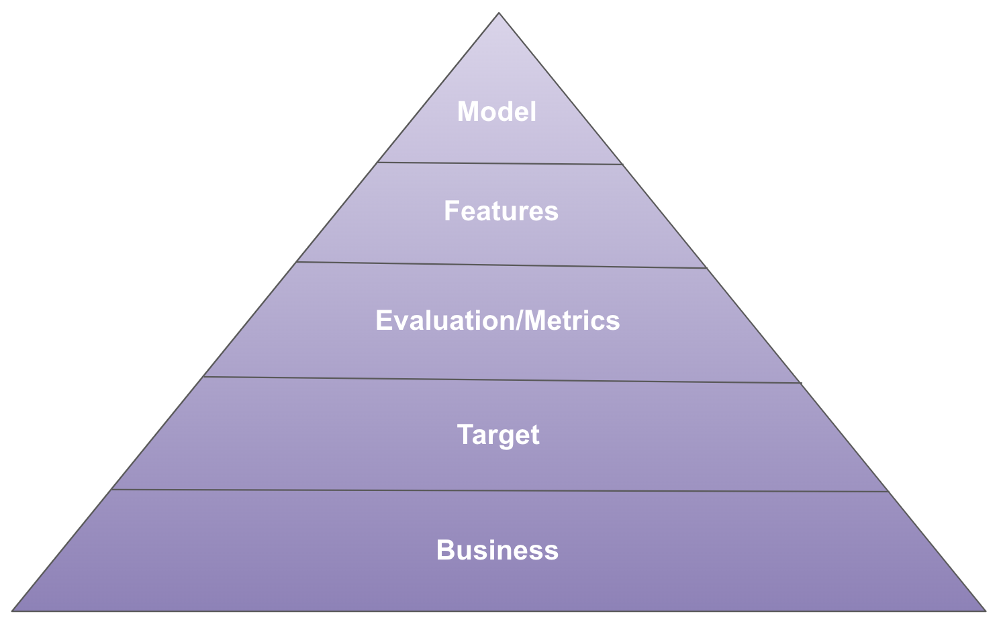
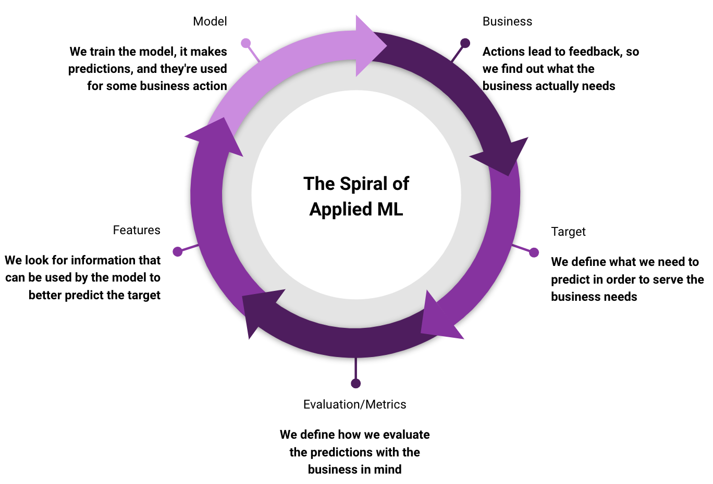

In 1943, Abraham Maslow created the hierarchy of human needs, ranging from basic physiological needs to abstract concepts like self-actualization. In this article, I propose a hierarchy of machine learning needs:

A framework like this can be useful for answering questions like:
- Will my job as a data scientist be automated in a few years?
- In terms of personal growth, should I focus on solving more Kaggle problems or more real-world problems?
- What kind of monitoring should I do after deploying a model in production?
I try to answer these questions and more at the end of this article, but first, it’s necessary to define and better understand each need in the hierarchy.
The hierarchy of needs
Business
Business sits at the base of the pyramid, as it’s the foundation everything is built upon. Directly or indirectly, data scientists must always strive to deliver value to the business. This way, we can impact customers positively, secure resources (whether human or computational), and advance in our careers. This pragmatic view may be discouraging for those seeking technical challenges only, but I propose that business challenges are more difficult and unique than those found in machine learning competitions.
No e-commerce company aims solely to predict customer churn; the real goal is to take actions that reduce churn among the most valuable customers. Credit risk assessment alone isn’t very useful; deciding who will receive credit and for how much is the core of many financial institutions. The probability of lead conversion is just the first step in prioritizing and allocating sales resources in a B2B company. In all three examples mentioned above, the focus is on intervention (causality) rather than just prediction (machine learning).
I worked on a document classification project where there initially seemed to be no complicated business issues involved; achieving sufficient accuracy would ensure the project’s success. After talking to the actual users, I realized that the classification rationale was more important than the decision itself. In the same place, a project had previously failed for considering only the model’s AUC without any concern for its practical use. We shifted our focus and delivered a system that was genuinely useful for the users and the company.
Target
The target is what the model will try to predict, which may not be obvious at first:
- Churn: What should be the time window to define churn? What if the user becomes active again?
- Credit: How is a default defined? How long must one go without paying to be a default?
- Sales lead: At what point in the sales funnel do we define conversion? What if there is a refund?
- Document classification: What should be done with sub-categories? Can we group smaller categories into “others”?
Choosing the target is the most critical step in modeling. No features or models can save an inappropriate target. On the other hand, having an appropriate target allows even very simple models (such as linear regression) with basic features to have some impact and be deployed to production.
Evaluation/Metrics
Evaluation is the framework that objectively assesses how well a model performs. The evaluation process should closely resemble the expected outcomes after the model’s deployment. While the standard train-test or cross-validation splits provide a starting point, they are generally insufficient. If the problem evolves over time (as is the case for nearly all business problems), a time-series split should be employed. If the target is censored for six months, there should be a six-month gap between training and testing. If the data contains groups and the model will make predictions for new groups in the future, you should use a group split.
Metrics judge how well a model is predicting its target. It’s not uncommon to use more than one evaluation metric for the same problem. For example, in a binary classification problem, one might use AUC to assess how well the model ranks examples and log loss to evaluate whether the probabilities are well calibrated. Moreover, it’s common to consider business metrics, such as expected conversion rate or the number of credit approvals. These metrics are harder to estimate offline and generally require some assumptions or experiments. Although handling these metrics may be more laborious, they serve as a more powerful guide than traditional machine learning metrics. Plus, communicating results with people from other areas becomes much easier.
Features
Features are what go into the model. It’s crucial to avoid leakage, meaning that when deploying the model in production, features must appear in the same way they did during training. I’ve encountered leakage in a conversion prediction project where I used features that only appeared when the user converted. In other cases, the values were missing. The model learned that missing values were never associated with conversions and achieved a 100% AUC. However, this model had no real value for the business!
Feature engineering can be partially automated with tools like Featuretools. However, most of the work in creating new features depends on understanding the problem and the available data (including what can be crawled or purchased externally).
Are more features always better? Not necessarily. More features may require more monitoring and engineering, which may not be a good trade-off in certain cases. It’s essential to balance the value of features (possibly with a business metric) with their operational and maintenance costs.
Models
In the end, given the constraints of business, target, evaluation metric, and features, the choice of models narrows considerably. If the business requires interpretability of predictions, you shouldn’t use a neural network. If the target is continuous, you want a regression model, not a classification model. If the metric evaluates the calibration of probabilities, you want a model that can learn a proper scoring rule. If you have more features than examples, you want a model that can ignore most features, like Lasso regression.
The modeling process can be automated with tools like auto-sklearn or PyCaret, but only if it makes sense for the business. In some cases, gaining an additional percentage point in accuracy is less useful than having interpretable decisions, communicating with other areas about how the model works (including external regulators), training speed for “big data” cases, and prediction latency for real-time systems.
Applications
We can apply the hierarchy of needs to better understand the reality of machine learning, which is difficult to learn in MOOCs or competitions:
The Spiral of Applied Machine Learning
In practice, machine learning is not done linearly, starting with a business problem and ending with a model. The process is repeated several times, and each iteration feeds the next:

This suggests starting simple on the modelling side. Always define a baseline first, which can be the status quo model, a business rule of thumb, or a simple model (e.g. a linear regression or a decision tree classifier). The first model you build to compare against the baseline should be pragmatic, which depends on your domain:
- Tabular data: Use LightGBM (watch my PyData London presentation here) or XGBoost
- Text classification: Use word counts and Naive Bayes, TF-IDF and logistic regression, or ChatGPT API
- Image recognition: ResNet with transfer learning or ChatGPT4 API
- Time series forecasting: Auto-ARIMA or Prophet
This will handle the “model” part of the spiral and probably capture most of the gains. Use your time to focus on the other components before coming back to the model.
Auto ML
Machine learning automation operates only at the highest levels of the pyramid: primarily in modeling, followed by feature engineering and selection. The other needs are much harder to automate and are the biggest differentiators among data scientists, since they depend on domain knowledge. Even in the modeling part, there are cases where maximizing a single metric does not capture the whole story:
Once, while I was in the process of updating models, an analyst noticed that there was a small sub-population where the new model provided predictions that made no sense. In terms of metrics, there was no doubt that the new model was better, but for the business, it was not good to make mistakes in this sub-population. In this case, since I was using a relatively interpretable model, I managed to discover the reason for the incorrect predictions (related to how the missing values were being handled) and could deploy an appropriate solution.
Monitoring
Monitoring a model in production should be done at all levels of the hierarchy. Monitoring is generally associated with evaluation metrics, but other needs should not be ignored. For example, in a credit card fraud problem, the target is generally censored for several months (since it takes time to determine whether fraud has occurred or not, as it is a manual process), meaning that metrics can only be calculated months after each model decision. In this case, it is important to evaluate how the target is changing over time (using proxies with shorter censoring), monitor whether the model’s output distribution remains stable over time, and whether the distribution of features remains the same, which is a significant challenge in itself. For more information on model monitoring, I highly recommend watching Lina Weichbrodt’s PyData Berlin presentation.
Kaggle
In the case of Kaggle, the entire challenge lies in modeling, feature engineering and evaluation. The metric and target are already given. The business aspect is not explicitly present. With this, we can see the limitations of Kaggle as training and evaluation for a data scientist who will work on real-world problems.
Kaggle is a great tool for its purpose and is highly valued in the selection process for some positions. However, a data scientist needs to go beyond this and try to tackle other types of problems, those that are not well-formulated and therefore are fertile ground for exploring targets, metrics, and the use of models in decision-making.
Conclusion
In this article, I tried to convey the perspective of a machine learning practitioner, undoubtedly biased by my particular experience. However, I believe the points raised are relevant to many other data scientists. I hope the reader can use the presented hierarchy of needs to better guide the processes and decisions made as both a practitioner and a student in the field.
This blog post originally appeared in the Data Hackers Medium in 2019. Full disclosue: the translation was done with the help of GPT4. I reviewed the final text and updated some sections, since I’ve personally learned and grown a lot since 2019. I’m open to feedback or suggestions for more applications of the hierarchy of needs framework.